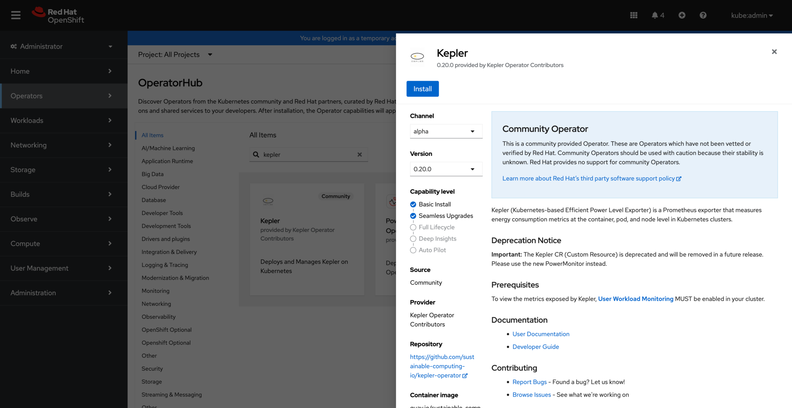
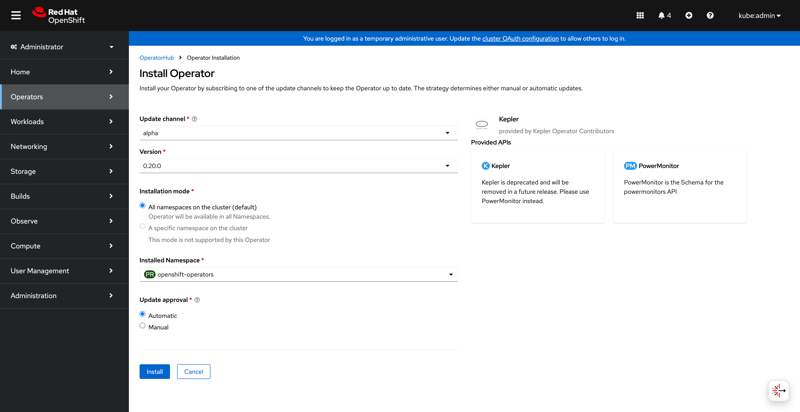
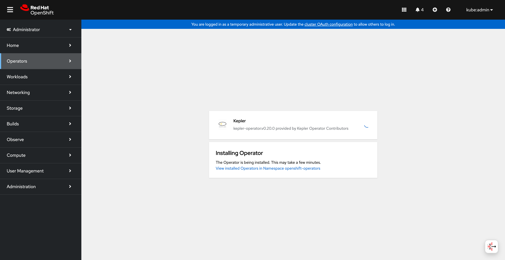
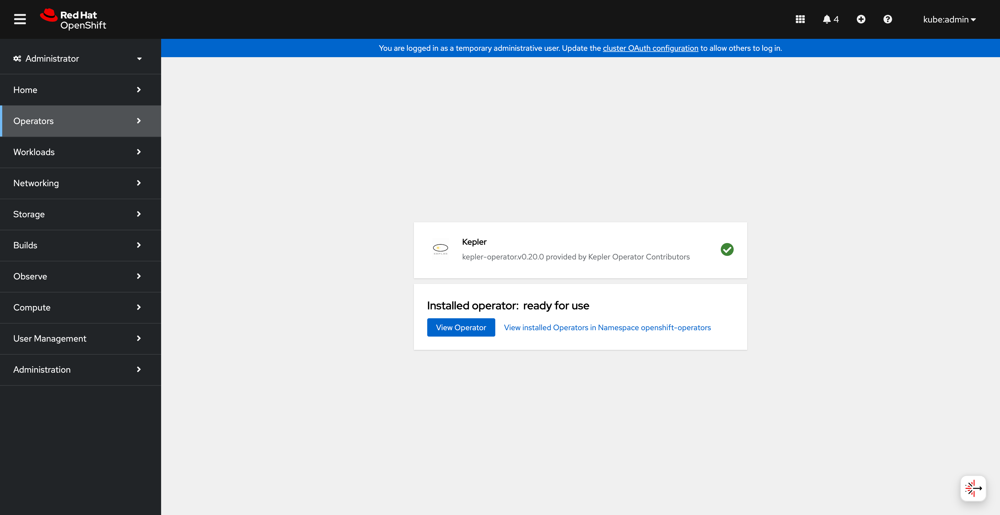
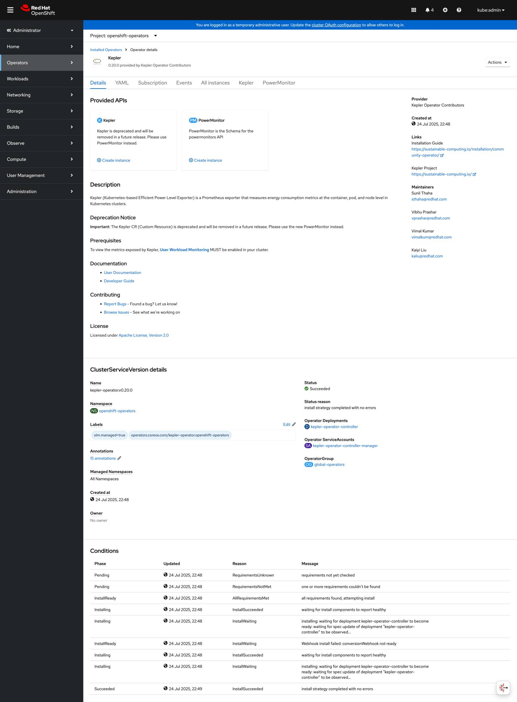
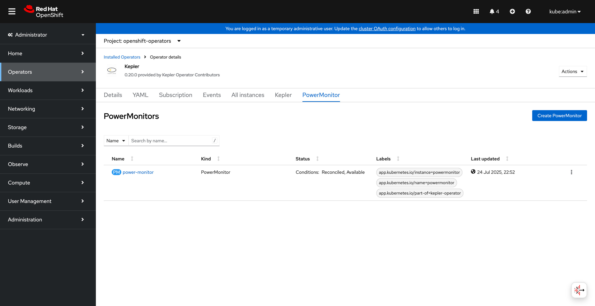
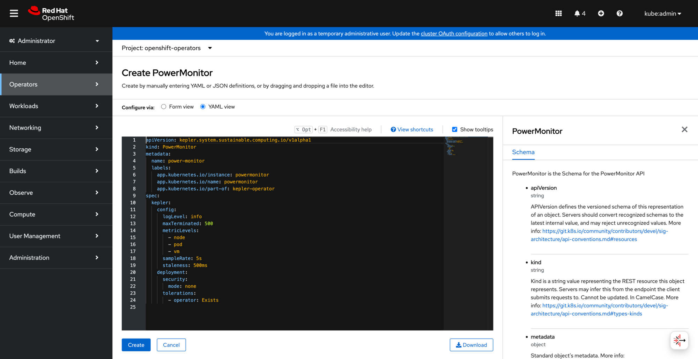
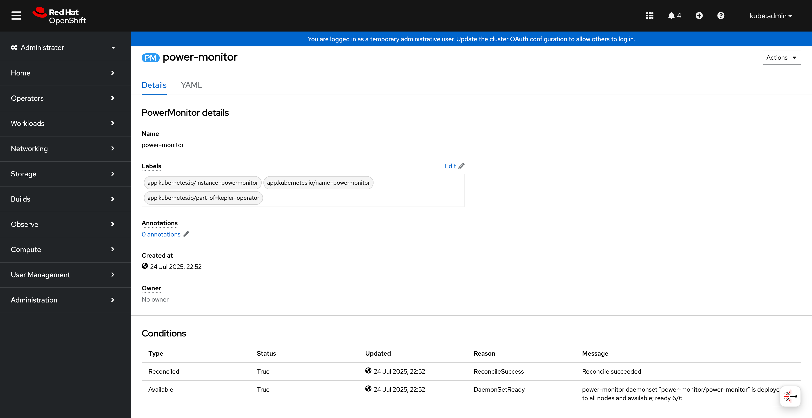
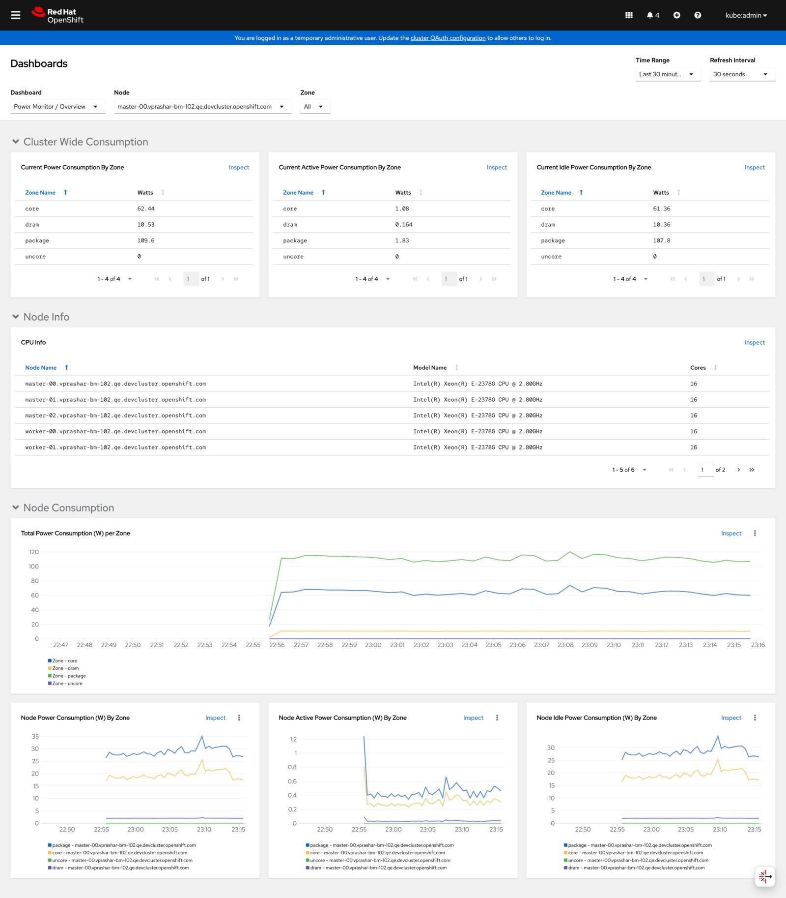
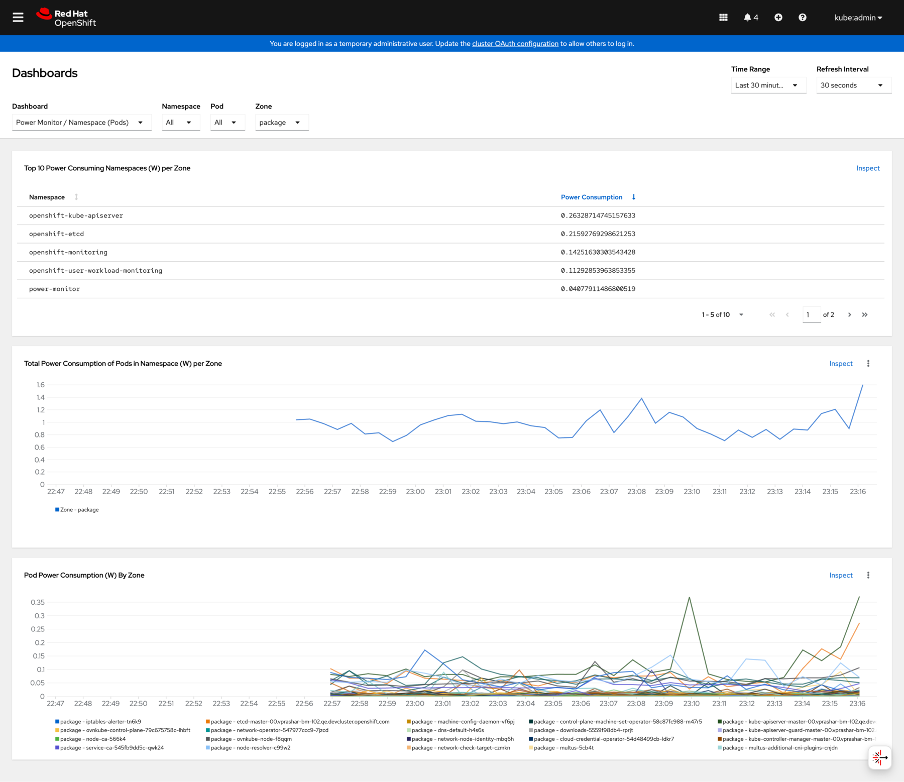

Kepler Operator on OpenShift
Overview
PowerMonitor is the modern Kepler Custom Resource Definition that provides enhanced configuration options and improved resource management for Kepler deployments. This guide demonstrates how to install and configure the Kepler operator with PowerMonitor on OpenShift using both the web console and command-line interfaces.
Migration Notice
Important
The Kepler CRD is deprecated and will be removed in a future release. Please use PowerMonitor instead for all new deployments and migrate existing installations to ensure continued support.
Requirements
Before you start make sure you have:
- OpenShift cluster access with
cluster-adminprivileges - User Workload Monitoring enabled in your cluster
- Access to OperatorHub (for UI installation)
ocCLI tool installed (for command-line operations)
Note
Your operator will automatically use the current context in your kubeconfig
file (i.e. whatever cluster oc cluster-info shows).
Installation Methods
Method 1: OperatorHub Installation (Recommended)
Step 1: Access OperatorHub
Navigate to Operators → OperatorHub in the OpenShift web console and search for "kepler":

Kepler operator available in OperatorHub
Step 2: Install the Operator
Click Install to begin the installation process:

Starting the Kepler operator installation
Monitor the installation progress:

Operator installation in progress
Step 3: Verify Installation
Once the installation completes successfully:

Operator successfully installed and ready for use
Step 4: Explore Operator Details
Navigate to the operator details to see available APIs:

Kepler operator details showing PowerMonitor and deprecated Kepler APIs
Click on the PowerMonitor tab to access the modern API:

PowerMonitor API tab in operator details
Method 2: Command Line Installation
If you prefer using the command line, you can install the operator directly:
# Create the operator subscription
oc apply -f - << EOF
apiVersion: operators.coreos.com/v1alpha1
kind: Subscription
metadata:
name: kepler-operator
namespace: openshift-operators
spec:
channel: alpha
name: kepler-operator
source: community-operators
sourceNamespace: openshift-marketplace
EOF
Wait for the operator to be ready:
oc get csv -n openshift-operators | grep kepler
PowerMonitor Configuration
Step 1: Create PowerMonitor Instance
You can create a PowerMonitor instance using the web console or command line.
Using Web Console
Click Create PowerMonitor in the operator details:

PowerMonitor YAML configuration in OpenShift editor
Using Command Line
Create a basic PowerMonitor configuration:
apiVersion: kepler.system.sustainable.computing.io/v1alpha1
kind: PowerMonitor
metadata:
name: power-monitor
labels:
app.kubernetes.io/name: powermonitor
app.kubernetes.io/instance: powermonitor
app.kubernetes.io/part-of: kepler-operator
spec:
kepler:
config:
logLevel: info
metricLevels:
- node
- pod
- vm
sampleRate: 5s
staleness: 500ms
maxTerminated: 500
deployment:
security:
mode: none
Apply the configuration:
oc apply -f power-monitor.yaml
Step 2: Verify PowerMonitor Deployment
Check the PowerMonitor instance status:

PowerMonitor instance details and status conditions
Verify the DaemonSet is running:
oc get powermonitor power-monitor -o wide
oc get daemonset -n power-monitor
Configuration Options
Basic Configuration
The PowerMonitor CRD provides several configuration options:
Metric Levels
Control which metrics are exported:
spec:
kepler:
config:
metricLevels:
- node # Node-level power consumption
- pod # Pod-level power consumption
- vm # Virtual machine power consumption
- process # Process-level power consumption
- container # Container-level power consumption
Timing Settings
Configure sample rates and staleness thresholds:
spec:
kepler:
config:
sampleRate: 5s # How often to sample metrics
staleness: 500ms # How long before values are considered stale
Security Configuration
Configure security mode and service accounts:
spec:
kepler:
deployment:
security:
mode: rbac # Options: none, rbac
allowedSANames:
- "my-service-account"
Resource Management
Control terminated workload tracking:
spec:
kepler:
config:
maxTerminated: 500 # Track top 500 terminated workloads
# maxTerminated: 0 # Disable terminated workload tracking
# maxTerminated: -1 # Track unlimited terminated workloads
Additional Configuration
Use additional ConfigMaps for extended configuration:
spec:
kepler:
config:
additionalConfigMaps:
- name: my-custom-config
- name: extended-settings
Advanced Configuration
Node Selection and Tolerations
Control where Kepler pods are scheduled:
spec:
kepler:
deployment:
nodeSelector:
kubernetes.io/os: linux
node-type: worker
tolerations:
- key: node-role.kubernetes.io/master
operator: Exists
effect: NoSchedule
Monitoring and Grafana Setup
Enable User Workload Monitoring
Ensure User Workload Monitoring is enabled in your cluster:
oc -n openshift-monitoring get configmap cluster-monitoring-config -o yaml
If not enabled, create the configuration:
apiVersion: v1
kind: ConfigMap
metadata:
name: cluster-monitoring-config
namespace: openshift-monitoring
data:
config.yaml: |
enableUserWorkload: true
Access OpenShift Metrics
Navigate to Observe → Metrics in the OpenShift console:

OpenShift metrics dashboard showing power consumption overview
View detailed power consumption metrics:

Detailed OpenShift metrics dashboard with power consumption charts and node information
Service Monitor Configuration
The operator automatically creates ServiceMonitor resources, but you can verify:
oc get servicemonitor -n power-monitor
Grafana Dashboard
For advanced visualization, you can import the Kepler Grafana dashboard:
# Get the dashboard JSON
curl -O https://raw.githubusercontent.com/sustainable-computing-io/kepler-operator/main/hack/dashboard/assets/kepler/dashboard.json
# Import into your Grafana instance
Management and Troubleshooting
Checking PowerMonitor Status
Monitor the PowerMonitor resource status:
# Check PowerMonitor status
oc get powermonitor power-monitor -o yaml
# Check conditions
oc describe powermonitor power-monitor
DaemonSet Verification
Verify the Kepler DaemonSet is running properly:
# Check DaemonSet status
oc get daemonset -n power-monitor
# Check pod status on each node
oc get pods -n power-monitor -o wide
# Check logs
oc logs -n power-monitor -l app.kubernetes.io/name=kepler-exporter
Common Issues and Solutions
Issue: PowerMonitor not creating DaemonSet
Solution: Check operator logs and resource permissions:
# Check operator logs
oc logs -n openshift-operators deployment/kepler-operator-controller-manager
# Verify RBAC permissions
oc auth can-i create daemonsets --as=system:serviceaccount:openshift-operators:kepler-operator-controller-manager
Issue: Pods not scheduling on nodes
Solution: Check node selectors and tolerations:
# Check node labels
oc get nodes --show-labels
# Update nodeSelector in PowerMonitor spec if needed
oc patch powermonitor power-monitor --type='merge' -p='{"spec":{"kepler":{"deployment":{"nodeSelector":{"kubernetes.io/os":"linux"}}}}}'
Issue: Missing metrics in monitoring
Solution: Verify ServiceMonitor and endpoint configuration:
# Check ServiceMonitor
oc get servicemonitor -n power-monitor -o yaml
# Check service endpoints
oc get endpoints -n power-monitor
# Test metrics endpoint
oc port-forward -n power-monitor svc/kepler-exporter 9102:9102
curl http://localhost:9102/metrics
Migration from Kepler CRD
If you have existing Kepler CRD instances, migrate to PowerMonitor:
Step 1: Export Current Configuration
oc get kepler kepler -o yaml > kepler-backup.yaml
Step 2: Create Equivalent PowerMonitor
Convert the configuration structure:
# Old Kepler CRD (deprecated)
apiVersion: kepler.system.sustainable.computing.io/v1alpha1
kind: Kepler
spec:
exporter:
deployment:
port: 9102
# New PowerMonitor CRD
apiVersion: kepler.system.sustainable.computing.io/v1alpha1
kind: PowerMonitor
spec:
kepler:
config:
logLevel: info
deployment:
security:
mode: none
Step 3: Apply and Verify
oc apply -f power-monitor.yaml
oc delete kepler kepler # Remove old resource after verification
Uninstall
To remove the PowerMonitor and operator:
# Delete PowerMonitor instance
oc delete powermonitor power-monitor
# Uninstall operator (if desired)
oc delete subscription kepler-operator -n openshift-operators
oc delete csv -n openshift-operators $(oc get csv -n openshift-operators -o name | grep kepler)
Next Steps
- View project resources for additional documentation
- Get support for help and contributions